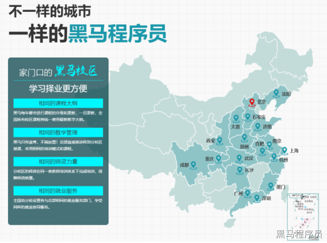

<!DOCTYPE lake>
<h1 data-lake-id="CCruj" id="CCruj"><span data-lake-id="uced40cd1" id="uced40cd1" style="color: rgb(44, 62, 80)">传智播客-黑马程序员就业体系</span></h1><p data-lake-id="uca8c1b32" id="uca8c1b32"><span class="lake-fontsize-12" data-lake-id="u5af4b9a2" id="u5af4b9a2" style="color: rgb(44, 62, 80)">我们目前在全国20多个城市,拥有就业辅导中心, 就业辅导中心为大家提供就业前,就业中和就业后的一条龙服务</span></p><p data-lake-id="uf116d0cb" id="uf116d0cb"></p><h1 data-lake-id="LWVnk" id="LWVnk"><span data-lake-id="ufa62d867" id="ufa62d867" style="color: rgb(44, 62, 80)">就业前技能辅导</span></h1><ol list="u09dfabd1"><li data-lake-id="u51f0befa" fid="u3274b893" id="u51f0befa"><span class="lake-fontsize-12" data-lake-id="ucb9fb398" id="ucb9fb398" style="color: rgb(44, 62, 80)">简历书写</span></li><li data-lake-id="uf1bba5e6" fid="u3274b893" id="uf1bba5e6"><span class="lake-fontsize-12" data-lake-id="ue1266057" id="ue1266057" style="color: rgb(44, 62, 80)">模拟面试</span></li><li data-lake-id="ud777b9c5" fid="u3274b893" id="ud777b9c5"><span class="lake-fontsize-12" data-lake-id="u23843261" id="u23843261" style="color: rgb(44, 62, 80)">技术总结和汇总</span></li><li data-lake-id="uc046c911" fid="u3274b893" id="uc046c911"><span class="lake-fontsize-12" data-lake-id="u1139863e" id="u1139863e" style="color: rgb(44, 62, 80)">学员答疑</span></li><li data-lake-id="uba1f8d93" fid="u3274b893" id="uba1f8d93"><span class="lake-fontsize-12" data-lake-id="u967c670d" id="u967c670d" style="color: rgb(44, 62, 80)">其他相关辅导</span></li></ol><ul list="u18311c0c"><li data-lake-id="uf7bc8e7e" fid="u4d8a1857" id="uf7bc8e7e"><span class="lake-fontsize-12" data-lake-id="u2d0b4c52" id="u2d0b4c52" style="color: rgb(44, 62, 80)">工作,求职,面试,市场,人事,求职心里辅导等</span></li></ul><h1 data-lake-id="azpWN" id="azpWN"><span data-lake-id="u9cd6a6da" id="u9cd6a6da" style="color: rgb(44, 62, 80)">就业中技术支持</span></h1><ul list="u668b6a22"><li data-lake-id="u01a094e7" fid="u10ffd84a" id="u01a094e7"><span class="lake-fontsize-12" data-lake-id="u02758799" id="u02758799" style="color: rgb(44, 62, 80)">技术问题</span></li><li data-lake-id="u0dc833b1" fid="u10ffd84a" id="u0dc833b1"><span class="lake-fontsize-12" data-lake-id="uf79ea6f5" id="uf79ea6f5" style="color: rgb(44, 62, 80)">人事问题</span></li></ul><h1 data-lake-id="ld5u8" id="ld5u8"><span data-lake-id="u451759df" id="u451759df" style="color: rgb(44, 62, 80)">就业后问题答疑</span></h1><ul list="uf5cee12a"><li data-lake-id="u25380a2e" fid="u6259284a" id="u25380a2e"><span class="lake-fontsize-12" data-lake-id="u94a3f4f2" id="u94a3f4f2" style="color: rgb(44, 62, 80)">如何有效提问</span></li><li data-lake-id="uc8b973f9" fid="u6259284a" id="uc8b973f9"><span class="lake-fontsize-12" data-lake-id="ud5334c05" id="ud5334c05" style="color: rgb(44, 62, 80)">如何高效学习</span></li><li data-lake-id="uc10c0d1e" fid="u6259284a" id="uc10c0d1e"><span class="lake-fontsize-12" data-lake-id="ue5df7c7d" id="ue5df7c7d" style="color: rgb(44, 62, 80)">如何规划时间</span></li></ul><h1 data-lake-id="qbG5i" id="qbG5i"><span data-lake-id="u6ddbfaf4" id="u6ddbfaf4" style="color: rgb(44, 62, 80)">课程目标</span></h1><ol list="u8ec2324f"><li data-lake-id="uc9928259" fid="uf98ce7b0" id="uc9928259"><span class="lake-fontsize-12" data-lake-id="u96c1320b" id="u96c1320b" style="color: rgb(44, 62, 80)">能够写出适合自己的简历、掌握书写简历的注意事项</span></li><li data-lake-id="u4d643bfa" fid="uf98ce7b0" id="u4d643bfa"><span class="lake-fontsize-12" data-lake-id="u0799a884" id="u0799a884" style="color: rgb(44, 62, 80)">能够掌握常见面试的注意事项：投递时间、渠道和投递技巧</span></li><li data-lake-id="u0d0b6ac1" fid="uf98ce7b0" id="u0d0b6ac1"><span class="lake-fontsize-12" data-lake-id="uceeafd90" id="uceeafd90" style="color: rgb(44, 62, 80)">能够了解常见公司岗位架构、公司内部主要岗位及职责等</span></li><li data-lake-id="uf319d09f" fid="uf98ce7b0" id="uf319d09f"><span class="lake-fontsize-12" data-lake-id="u3b5e609b" id="u3b5e609b" style="color: rgb(44, 62, 80)">能够了解软件行业的分类（外包、互联网、科技公司、国企、创业公司等）</span></li><li data-lake-id="u848ed8ea" fid="uf98ce7b0" id="u848ed8ea"><span class="lake-fontsize-12" data-lake-id="u685ffc19" id="u685ffc19" style="color: rgb(44, 62, 80)">能够了解项目的开发流程（需求分析-设备选型-技术编码-测试）</span></li><li data-lake-id="u43bde6ee" fid="uf98ce7b0" id="u43bde6ee"><span class="lake-fontsize-12" data-lake-id="u3355ef36" id="u3355ef36" style="color: rgb(44, 62, 80)">掌握人事这块知识：了解五险一金、了解薪资组成、了解企业关注点、了解人事常问的问题</span></li><li data-lake-id="u2393d730" fid="uf98ce7b0" id="u2393d730"><span class="lake-fontsize-12" data-lake-id="u9cc49cdf" id="u9cc49cdf" style="color: rgb(44, 62, 80)">掌握机器人软件开发常见面试知识点</span></li><li data-lake-id="u194c6058" fid="uf98ce7b0" id="u194c6058"><span class="lake-fontsize-12" data-lake-id="u33fc8c09" id="u33fc8c09" style="color: rgb(44, 62, 80)">能够把自己"卖"出最好的价钱</span></li></ol>